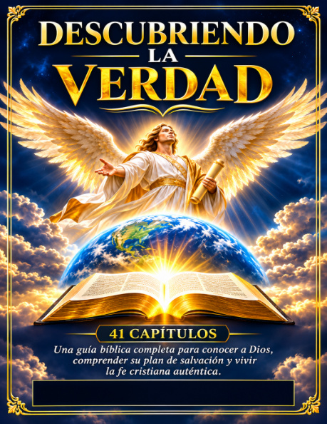

À LA DÉCOUVERTE
DE LA VÉRITÉ
DE LA VÉRITÉ
Français
À la découverte de la vérité
Une étude biblique de la Genèse à l’Apocalypse, en 41 chapitres.
Édition française : fichier déjà publié sur le site actuel (à conserver lors de la mise à jour).
Discovering the Truth · Descubriendo la verdad
41 chapitres pour explorer les Saintes Écritures. Accès gratuit, sans inscription. Choisissez votre langue.
Trois éditions, trois accès directs. Les fichiers peuvent être remplacés ultérieurement sans changer l’adresse du site ni le QR code.
Une étude biblique de la Genèse à l’Apocalypse, en 41 chapitres.
A thematic Bible study guide in 41 chapters. King James Version (KJV).

Estudios bíblicos temáticos en 41 capítulos. Referencias a Reina-Valera 1909.
Ce site présente un projet d’études bibliques en trois langues. Les éditions sont proposées gratuitement pour la lecture personnelle. Certaines versions peuvent être en cours de révision : leur disponibilité et leur statut sont indiqués sur chaque carte.
Adresse permanente : jouvensgabrieljouvens-design.github.io/decouverte-verite/